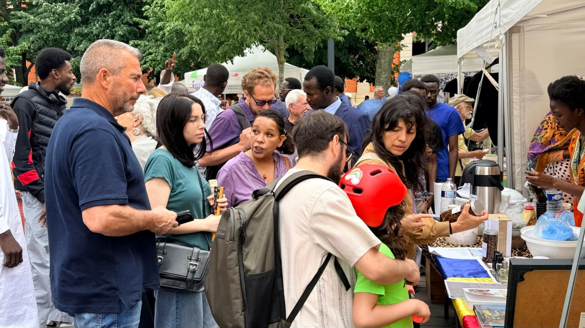
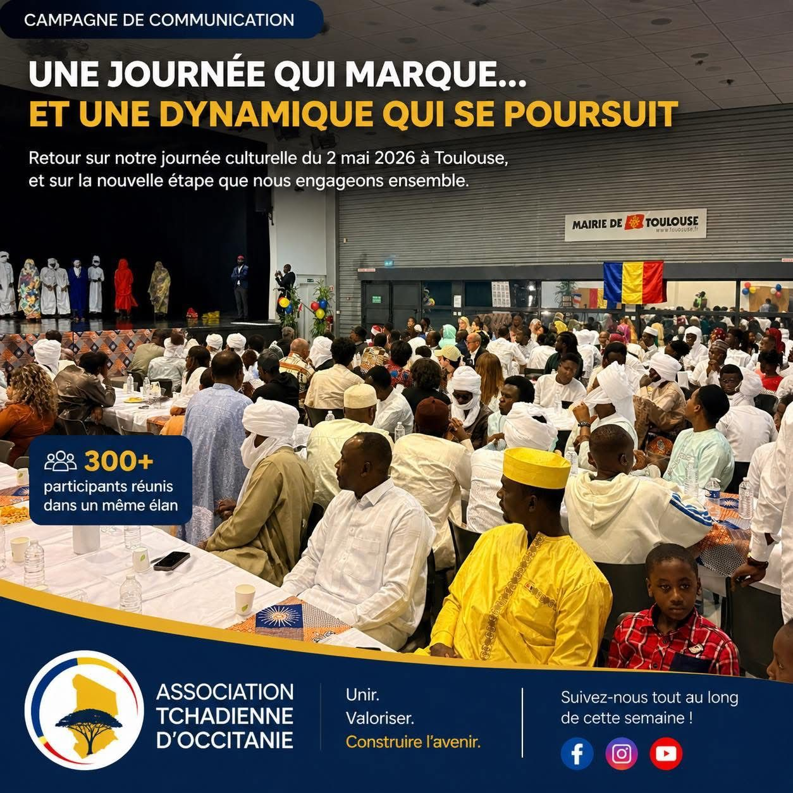
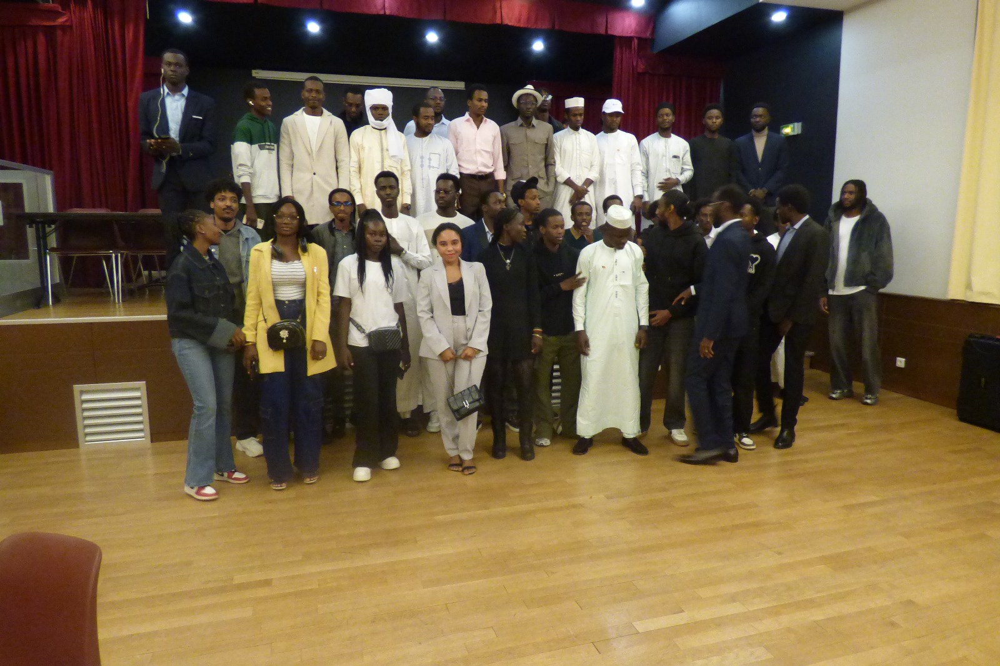

2 juin 2026
Lancement officiel du nouveau site internet
L'association se modernise avec une présence en ligne pour faciliter les adhésions, centraliser les événements et simplifier la communication avec ses membres.
Lire la suite →Le récit de nos temps forts, à mesure qu'ils se passent.
2 juin 2026
L'association se modernise avec une présence en ligne pour faciliter les adhésions, centraliser les événements et simplifier la communication avec ses membres.
Lire la suite →
24 mai 2026
Place Saint-Sernin, l'association a tenu un stand riche en partage et en découvertes, aux côtés de nombreuses autres associations. Merci à nos bénévoles et à toute la communauté tchadienne pour cette belle journée.
Lire la suite →
2 mai 2026
Au-delà des souvenirs, cette journée a porté une dynamique collective qui continue de grandir. L'association poursuit son chemin avec celles et ceux qui souhaitent s'investir, à leur manière.
Lire la suite →
26 octobre 2025
Une journée chaleureuse pour accueillir les nouveaux étudiants tchadiens arrivés à Toulouse, créer du lien dès leur arrivée et leur présenter la vie de l'association.
Lire la suite →